Intercambio de papeles
Mon, 28 Nov 2011 07:00:00 +0100
El Barcelona perdió su primer partido de la Liga en Getafe, derrota sorprendente si se tiene en cuenta que estaba invicto desde el 30 de abril, 27 encuentros en total, cuando cayó en San Sebastián. El marcador no debería comprometer, por tanto, una trayectoria que contempla indicadores futbolísticos favorables respecto a temporadas anteriores, como el de la posesión del balón, la frecuencia de los pases o el factor campo: 30 goles a favor por ninguno en contra en el Camp Nou.
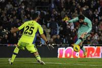
Tito Vilanova recibe el alta hospitalaria
Mon, 28 Nov 2011 11:28:00 +0100
Tito Vilanova, segundo entrenador del Barcelona, ha recibido el alta hospitalaria, según ha informado el club azulgrana. Vilanova, de 43 años, fue operado el pasado 22 de noviembre de la glándula parótida, una glándula salival situada a ambos lados de la cara, debajo del oído y detrás de la mandíbula inferior.
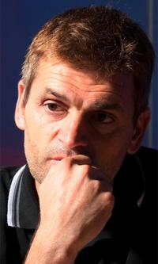
El líder mutante
Mon, 28 Nov 2011 07:00:00 +0100
Decía Arrigo Sacchi que nunca había visto hacer a un entrenador lo que José Mourinho hizo con el Inter entre 2008 y 2010. Aquel equipo, observó el técnico italiano, tenía varias identidades. Como este Madrid, que tampoco se rige por un principio, sino por unos cuantos que, a su vez, se subordinan a diversas estrategias para diversos estilos, cada uno con su discurso, superando contradicciones e incoherencias con el único fin de la victoria. Dentro y fuera de la cancha. En la relación con los jugadores y en la política de comunicación. El derbi contra el Atlético (4-1) confirmó que Mourinho ha convertido al Madrid en un líder mutante.
El Granada desnuda al Athletic en La Catedral
Sun, 27 Nov 2011 22:15:00 +0100
Tenía Marcelo Bielsa la mosca detrás de la oreja. Le picaba en el lóbulo tanto halago, tanto despliegue de adjetivos, tanta maravilla emboscada en los dos últimos partidos. Y lo denunció. La tropa recibió el mensaje y decidió que la cita con el Granada podía ser un partido trampa, de esos que se dan por absueltos y acabas condenado a muerte con un abogado de oficio. Del abrigo de visón al buzo de faena no hay más que un paso y el Athletic lo dio. En falso, pero lo dio. Y se lo comió el Granada oponiendo las mismas armas: un puzle abigarrado, dos líneas bailando pegadas, ni un hueco y el resto del campo para que campeasen los centrales con la mirada perdida.
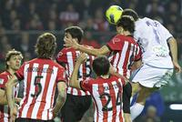
El artista reincidente
Sun, 27 Nov 2011 17:16:00 +0100
Dice Philippe Montanier que en las notas previas del partido habían apuntado que Casto, el portero del Betis, tiene por costumbre jugar muy adelantado. Y dice también que Iñigo Martínez, el central de la Real que le sorprendió desde la raya divisoria del medio campo, suele ensayar mucho estas jugadas en los entrenamientos. No es que Montanier quiera decir que el gol del defensa vizcaíno estuviera en la pizarra del partido, menos cuando el gol de la victoria se produjo en el período añadido del partido.
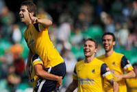
Osasuna destapa las carencias del Espanyol
Sun, 27 Nov 2011 20:57:00 +0100
La tranquilidad aparente de Osasuna esconde muchas veces un doble mensaje. Parece que un partido sin ritmo le sirva para mantener la concentración y no perderse en batallas viscerales. Eso obliga al rival a llevar la iniciativa aunque a veces, como el Espanyol en este caso, no esté del todo preparado. Se trataba de un cruce de intenciones. Las del Espanyol, volcadas en ese deseo romántico por valorar el pase corto, la movilidad y el espacio libre a pesar de que las bajas puedan condicionar su eficacia. Y las de Osasuna, para quien el partido requería aceleración en pequeñas dosis. Con Nino en el banquillo, José Luis Mendilibar apostó por el duende recién adquirido por Ibra y la velocidad de Lamah para tratar de romper por banda derecha, posición que ocupó Galán por la baja de Javi López. Al contrario que al conjunto de Mauricio Pochettino, a Osasuna no se le reconoce siempre un mismo planteamiento estético, tiene distintas versiones. En Cornellà tocaba recuperar la apariencia de la temporada pasada, esa en la que el equipo concede un espacio marcado para tras él, unos escasos metros del centro del campo propio, levantar una barrera más que contundente.
El ladrón del tiempo
Mon, 28 Nov 2011 07:00:00 +0100
Es el momento del suizo Roger Federer. Esperan el trofeo, los récords y la historia. Ya no cuenta para nada el francés Jo-Wilfried Tsonga. Ya no hay tiempo de que renazca, de que vuelva y ataque con su guadaña. Todo eso piensa el exnúmero uno mundial cuando el O2 Arena le ve sacar por el partido. Glorioso mito de la raqueta, Federer, con 6-3, 5-4 y su servicio para rematar la final de la Copa de Maestros. Tsonga, sin embargo, es de la escuela de la inconsciencia. A hierro mata y a hierro muere. Su tenis está hecho de corazón y tripas, sin lógica que lo contenga. Con Federer pensando en los fotógrafos, Tsonga se procura sus tres primeras bolas de break (6-3, 5-4 y 0-40). Calla el estadio. Tiembla el suizo. Rompe el francés y nace un partido rebosante de miedos que retrata al Federer de 2011: coronado (6-3, 6-7 y 6-3) por sexta vez como maestro, el récord, logra su 70º título en su 100ª final dejando golpes geniales, pero sin la continuidad que le caracterizó en sus mejores tiempos.
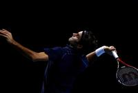
El Madrid afronta la resaca americana
Mon, 28 Nov 2011 07:00:00 +0100
Fue bonito mientras duró. El desembarco de siete jugadores de la NBA en la Liga Endesa, se entiende. Rudy Fernández (Dallas) ha dado espectáculo y a la vez ha sido efectivo en el Madrid. Su compañero Serge Ibaka (Oklahoma) ha despertado al final con un partido para enmarcar: 15 puntos, nueve rebotes y seis tapones, el sábado, en la cancha del CAI Zaragoza (67-84) y en ausencia de Tomic. El francés Kevin Seraphin (Washington) ha fortalecido el interior de la zona del Caja Laboral. A Goran Dragic (Houston), en el Baskonia, apenas le ha dado tiempo a debutar con una derrota ante el Unicaja (79-66).
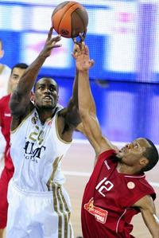
Otro atracón de Red Bull
Mon, 28 Nov 2011 07:00:00 +0100
El Mundial de 2011 puso el cerrojo en Interlagos (Brasil) en un gran premio que será recordado por la 15ª pole de Sebastian Vettel, que le permitió establecer un récord, y por la victoria de Mark Webber, la primera del curso para el australiano, que sacó tajada de un problema que afectó a la caja de cambios del coche del alemán, segundo. Jenson Button terminó tercero y, de ese modo, se aseguró el subcampeonato mientras que Fernando Alonso cruzó la meta el cuarto, el mismo puesto en el que acaba el Mundial. Una carrera intrascendente en un campeonato que Red Bull ha manejado a su antojo, dejando de lado otros aspectos que también se deberían tener en cuenta, como la flojera de Ferrari, el desespero de Hamilton y el contraste entre los dos integrantes de una misma formación.
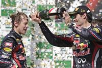
La indispensable estabilidad
Mon, 28 Nov 2011 07:00:00 +0100
Si algo ha quedado patente es que McLaren ha sido capaz de desarrollar mejor su coche que Ferrari. La prueba más evidente es que la escudería británica ha llegado al final del Mundial con uno capaz de competir con los Red Bull e incluso de superarles mientras que la italiana se ha encallado a mitad de camino y ha concluido el curso con un retraso notable.
"Tocados, no hundidos"
Mon, 28 Nov 2011 07:00:00 +0100
El árbitro pitó el final del partido y los jugadores del Getafe corrieron a abrazarse dentro del área pequeña, donde su portero yacía tirado en el sueño después de chocar con un compañero, en su última parada de la noche. Allí, junto a Moyà, vivió el Getafe todo el partido, así que allí festejó una victoria que se trabajó y se ganó. Cabizbajos, los jugadores del Barcelona les felicitaron camino del túnel: al campeón se le puso mustia su eterna sonrisa.
Una carambola estudiada
Mon, 28 Nov 2011 07:00:00 +0100
El pasado jueves, Luis García se presentó barnizado de optimismo en la sala de prensa del Coliséum. A dos días de recibir al Barcelona y tras completar un atípico entrenamiento en el que sus hombres se divirtieron jugando únicamente partidillos de futvoley, el técnico del Getafe lucía la sonrisa pícara de quien conoce la fórmula para incordiar al rival: "Lo vamos a hacer bien, seguro".
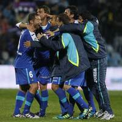
El forastero de plastilina
Mon, 28 Nov 2011 07:00:00 +0100
El sábado por la noche el Atlético salió del Bernabéu como el peor visitante de las grandes Ligas europeas, igualado con el Palermo con un punto de 18 posibles frente a los dos del Swansea en la Premier y los cuatro del Hannover y del Wolfsburgo en la Bundesliga. Por quinta vez en los últimos seis años, la escuadra del Manzanares se adelantó en el marcador del Bernabéu para nada. Una vez más, el entrenador, en este caso Gregorio Manzano, justificó la derrota quejándose del arbitraje. "Tuvimos una buena entrada al encuentro, nos adelantamos y hasta la jugada del penalti el Real Madrid ni había llegado ni disparado. Me voy satisfecho y contento de cómo ha trabajado el equipo", argumentó el preparador.
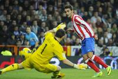
Negredo pesca el botín
Sun, 27 Nov 2011 23:47:00 +0100
El Sevilla llegaba seco a orillas del Ebro y pescó tres puntos reconstituyentes. Su última victoria databa de hace más de un mes, cuando se impuso por la mínima al Sporting en el Sánchez Pizjuán. La racha negativa se acentuaba teniendo en cuenta que los de Marcelino habían empatado los cinco partidos jugados fuera y los cuatro últimos habían acabado con un escuálido empate a cero. Pero en La Romareda el cuadro sevillista adecentó su expediente abrazado al ímpetu de Negredo.
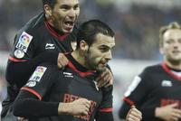
El Levante, cocido a fuego lento
Sun, 27 Nov 2011 18:05:00 +0100
El Levante no es flor de un día, sino que está cocido a fuego lento. Dispuesto a permanecer en la élite lo que le permita su imaginación, en vuelo celestial desde hace meses. Alentado ante el Sporting por los magníficos pases de Farinós, los quiebros de Barkero y las elegantes cabalgadas de Koné. Si a eso le añade la fiereza defensiva mantenida del año pasado, el equipo levantino ofrece unos números impecables: 23 goles a favor, dos más, por ejemplo, que el Valencia, y 12 en contra, uno menos que su poderoso vecino. El Sporting quiso ser protagonista y, en su audacia, cayó víctima de la mortal contra de los granota. Tan superiores estos en la segunda parte que Juan Ignacio Martínez se puso a hacer cuentas y, entre ellas, le pareció conveniente provocar la quinta tarjeta de Barkero, baja en el Camp Nou en la próxima jornada, de vuelta en el duelo frente al Sevilla.
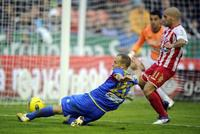
Caparrós logra su primera victoria con el Mallorca
Sun, 27 Nov 2011 20:37:00 +0100
Joaquín Caparrós logró su primera victoria como entrenador del Mallorca, después de seis jornadas de empates y derrotas. Fue en un mal encuentro entre dos equipos de la clase turista de la Liga, hambrientos de puntos y con inquietantes perspectivas de futuro.
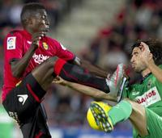
Marc Gasol, la pieza más codiciada
Mon, 28 Nov 2011 07:00:00 +0100
La fiebre ha subido de repente en los despachos de los clubes y las agencias de jugadores. Si el final del cierre patronal se desarrolla según lo anunciado por el comisionado de la NBA, David Stern, el 9 de diciembre se abrirá un mercado de fichajes que promete ser frenético, puesto que la temporada comienza el día de Navidad. Todo lo que no ha podido moverse hasta ahora, en cuanto a contactos y ofertas a jugadores se refiere, debe agilizarse en un par de semanas. Las listas de agentes libres o restringidos, los jugadores a los que se puede proponer ofertas, están confeccionadas desde hace tiempo. En el primero o el segundo lugar de casi todas aparece Marc Gasol. El pívot de los Grizzlies de Memphis cuajó una última temporada espléndida, con 11,7 puntos, siete rebotes y 2,5 asistencias de media, y junto a su equipo disputó unos playoffs en los que eliminaron a San Antonio Spurs y rozaron la proeza igualmente ante Oklahoma Thunder.
Ayón, mejor que nunca
Sun, 27 Nov 2011 21:25:00 +0100
Hasta hace un mes el Fuenlabrada era un equipo mustio. La pretemporada había dejado sensaciones preocupantes y los dos primeros encuentros de la Liga Endesa habían refrendado las carencias del equipo de Porfirio Fisac. "Nos faltan muchas cosas aún como equipo. Pero sobre todo nos falta Gustavo. Con él en la pista nos sentimos más seguros. Más fuertes", el técnico del equipo madrileño añoraba a Gustavo Ayón (Tepic, México; 1985) que por aquel entonces permanecía entre algodones por una delicada lesión en su hombro izquierdo. Pero Ayón ha vuelto y hoy en el pabellón sevillano de San Pablo se ha erigido en el líder absoluto de un Fuenlabrada luchador y descarado que ha acabado por imponerse al Cajasol de Joan Plaza por 97-99 en la prórroga. Ayón, más iluminado que nunca, ha firmado 34 puntos (con un 94% de acierto en tiros de dos) y 11 rebotes en 33 minutos de juego para un descomunal 43 de valoración. Nada pudo hacer Paul Davis (27 puntos, seis rebotes y cuatro asistencias) para frenar el impulso del Titán de Nayarit.
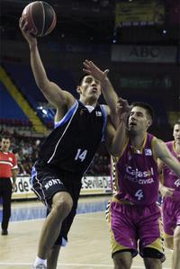
El tirón de Iceman
Mon, 28 Nov 2011 07:00:00 +0100
El anuncio que HRT hizo la semana pasada y que adelantaba que Pedro Martínez de la Rosa correrá en la escudería española durante los dos próximos años dejó al paddock de la F-1 con esa cara que se le queda a una sardina en la nevera. El piloto necesita competir como el aire que respira y ese deseo es el impulso que le ha llevado a dejar por segunda vez McLaren, donde cada vez tenía más ascendente, para meterse de lleno en un proyecto mucho más modesto. El caso de De la Rosa es de lo más atípico tratándose de uno de los equipos más modestos de la F-1. Dejando a un lado los ocho pilotos de los más potentes (Red Bull, Ferrari, McLaren y Mercedes), confirmados ya para 2012, la mayoría de las estructuras siguen sin desvelar quiénes se pondrán al volante de sus monoplazas, una decisión que, en general, no solo depende de la calidad del protagonista, sino también de su chequera.
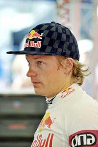
"Nos hemos mareado y vomitado como principiantes aunque hemos disfrutado"
Mon, 28 Nov 2011 12:56:00 +0100
Hola a todos: